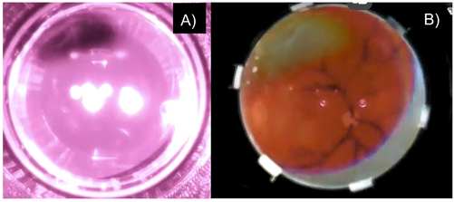
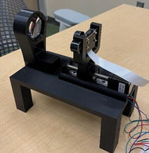
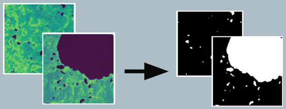

Background
Recent Graduate as a Computer & Information Science student from University of Minnesota. I have a broad range of technical interests involving machine learning, computer graphics, visualization, IT & data management.
What motivates me most are innovative technical solutions used to support environmental and medical industries. I explored different technical areas through my projects with a goal of building tools that can contribute to a positive, real-world impact.
My long-term goal is to contribute to projects that advance sustainable and ethical innovation. Building systems that improve resource management, healthcare outcomes, and environmental resilience. Through my projects and research, I aim to bridge technology, strategy, and real-world impact.
Education
University of Minnesota
Computer & Information Science Student
Relevant Coursework
- CSCI 1133 — Introduction to Programming Concepts
- CSCI 1933 — Intro Algorithms & Data Structures
- CSCI 2081W — Intro Software Development
- CSCI 2011 — Discrete Structures
- CSCI 2021 — Machine Architecture & Organization
- CSCI 3901 — Undergraduate Research in CS
- CSCI 3081W — Program Design & Development
- CSCI 4041 — Algorithms & Data Structures
- CSCI 4211 — Introduction to Computer Networks
- CSCI 4511W — Introduction to Artificial Intelligence
- CSCI 4481 — Computational Techniques for Genomics
- CSCI 5994 — Directed Research
- IDSC 3001 — Info Systems & Digital Transformation
- IDSC 3104 — Enterprise Systems
- IDSC 3103 — Data Modeling
- IDSC 3202 — Systems Analysis & Modeling
- MGMT 3001 — Foundations of Management
- SCO 3001 — Sustainable Supply Chain & Operations
- BA 2551 — Business Statistics in R
- ACCT 2051 — Intro Financial Accounting
- BA 2051 — Business Scenarios in Excel
- ECON 1101 — Principles of Microeconomics
- ESPM 1011 — Issues in the Environment
- ENGW 1101W — Intro Creative Writing
- CSCL 1201W — Cinema
Projects


Telehealth Fundus Camera
Helped develop a fundus camera system under Dan Orban at the Earl E. Bakken Medical Devices Center.
The project focused on designing a portable retinal imaging device capable of remote screening and image capture.
Contributions included exploring remote communication approaches for Raspberry Pi integration,
investigating VNC tunneling and WebSocket-based solutions, and supporting hardware/software interaction
for camera control, preview, and capture workflows.
Tools: Raspberry Pi · Remote Networking · VNC · WebSockets · Stepper Motor Control · Hardware Prototyping
Gene Start Site Prediction using Machine Learning
Conducted a comparative machine learning study on human and bacterial genomes
to evaluate how genome structure impacts translation start-site prediction accuracy.
The project analyzed multiple classical and deep learning approaches on sequence classification tasks.
Implemented Logistic Regression, Random Forest, XGBoost, Multilayer Perceptrons,
and 1D Convolutional Neural Networks using both one-hot encoded DNA windows and k-mer frequency features.
Experimental results showed bacterial datasets achieved up to 95–96% accuracy,
while human datasets plateaued near 55–60% due to biological complexity and weaker sequence motifs.
This work demonstrated that prediction performance is fundamentally constrained by genomic structure,
highlighting how machine learning limitations can arise from underlying biological variability
rather than model architecture alone.
Tools: Python · Scikit-learn · XGBoost · PyTorch · CNNs · Genomic Feature Engineering · Data Analysis
Visual Transit Simulator — Bus Stop Management System
Designed and implemented a Java-based bus stop management system that modeled stops,
routes, vehicles, and passenger flow within a larger transit simulation environment.
The system supported dynamic state updates and realistic movement of vehicles and riders
across configurable transit lines.
Integrated backend simulation logic with a web-based visualization layer using JSON messaging
to display real-time vehicle locations, stop activity, and passenger interactions in the browser.
This enabled a live view of simulation progress and system behavior.
Applied object-oriented design principles, UML modeling, and collaborative Git workflows
while working in a multi-file team codebase. The project strengthened experience in simulation design,
software architecture, and full-stack system integration.


Arctic Lakes Segmentation using Deep Learning
Conducted research through the National Science Foundation AI for Earth internship
to develop a deep learning pipeline for identifying Arctic lake regions from
multi-band Sentinel-2 satellite imagery.
Designed and trained a custom U-Net convolutional neural network in PyTorch,
implementing a full training workflow including loss computation using Binary Cross Entropy,
optimizer updates with Adam, and multi-epoch evaluation of model convergence.
Applied preprocessing, visualization, and prediction overlay techniques to compare
segmentation outputs with ground truth labels. Model performance was evaluated using
confusion matrices, precision, recall, F1 score, and Intersection-over-Union (IoU)
to measure boundary accuracy of Arctic lake detection.
Tools: PyTorch · U-Net · Satellite Imagery · Computer Vision · Model Evaluation · Remote Sensing
Scrabble AI — Search Algorithm Comparison
Developed an AI-driven Scrabble simulation to compare multiple search strategies
for selecting optimal word placements under constrained board and tile conditions.
Implemented Monte Carlo Tree Search (MCTS), Beam Search, A*, Greedy Best-First Search,
and Depth-First Search in Python to explore move selection strategies and decision quality.
Algorithms were evaluated through head-to-head AI matchups.
Measured performance using custom metrics including win rate, runtime efficiency,
and memory usage. Collaborated on core game logic and testing workflows using Git,
strengthening experience in algorithm analysis, experimentation, and AI system design.
Tools: Python · MCTS · A* · Beam Search · Algorithm Analysis · Game AI · Performance Evaluation
Skills
Programming Languages
Python · Java · C · C# · JavaScript · HTML · CSS · .NET
Machine Learning & Data
PyTorch · Deep Learning · CNNs · U-Net · Computer Vision · Model Evaluation · Algorithm Analysis ·
Data Preprocessing · Performance Benchmarking · LLM Concepts · MySQL · RStudio · Tableau · Power BI
Systems, Tools & Platforms
Git · Agile Development · CI/CD Pipelines · AWS · Azure · Docker · Atlassian ·
Visual Studio · IntelliJ · GDB Debugging · Network Troubleshooting · WebSockets ·
JSON Messaging · Object-Oriented Design · Simulation Systems · Technical Documentation ·
Microsoft 365 · Excel · Active Directory · SAP (ERP) · Salesforce (CRM)